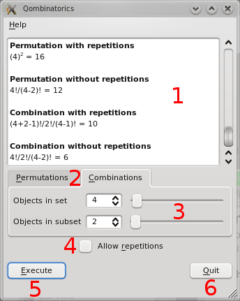

Usare qombinatorics

L'interfaccia del programma e' molto semplice.
- I risultati sono presentati in questa finestra;
- Cliccando si cambia tab, passando dal calcolo delle combinazioni a quello delle permutazioni e viceversa;
- E' possibile cambiare i parametri scrivendo direttamente nella spinbox, usando le freccette, oppure lo slider;
- Cliccando la casella e' possibile scegliere se includere o no le ripetizioni;
- Questo bottone esegue il calcolo;
- Tanti saluti, usciamo dall'applicazione!
Il testo puo' essere normalmente copiato e incollato.
Using qombinatorics
The user interface is really simple and intuitive.
- This is the output window;
- Clicking you can change the tab, switching form combination to permutation calculus and viceversa;
- You can change the input parameter writing in the spinbox, using the arrows or the slider;
- Click this checkbox to include or discard repetitions;
- This button executes calculations;
- Bye bye, qombinatorics!
The results can be copied and pasted as usual.